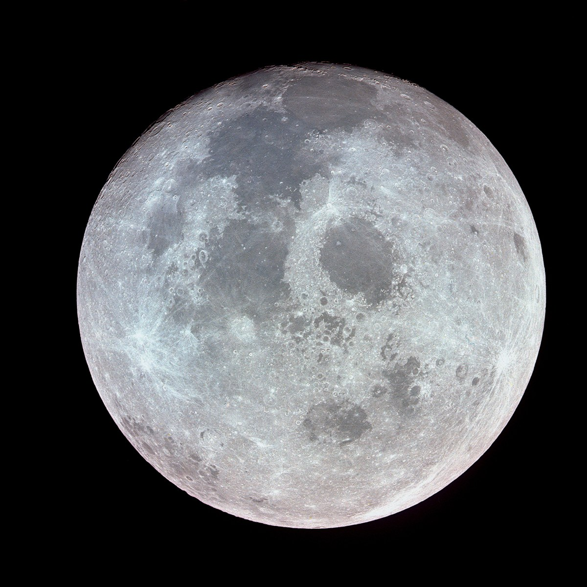
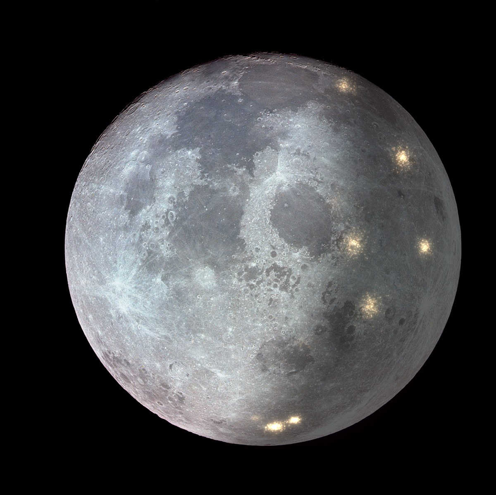
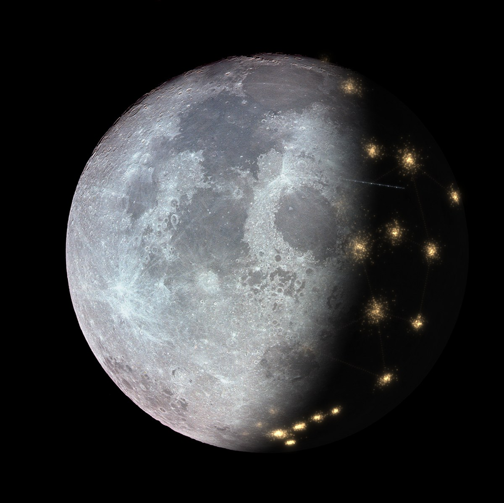
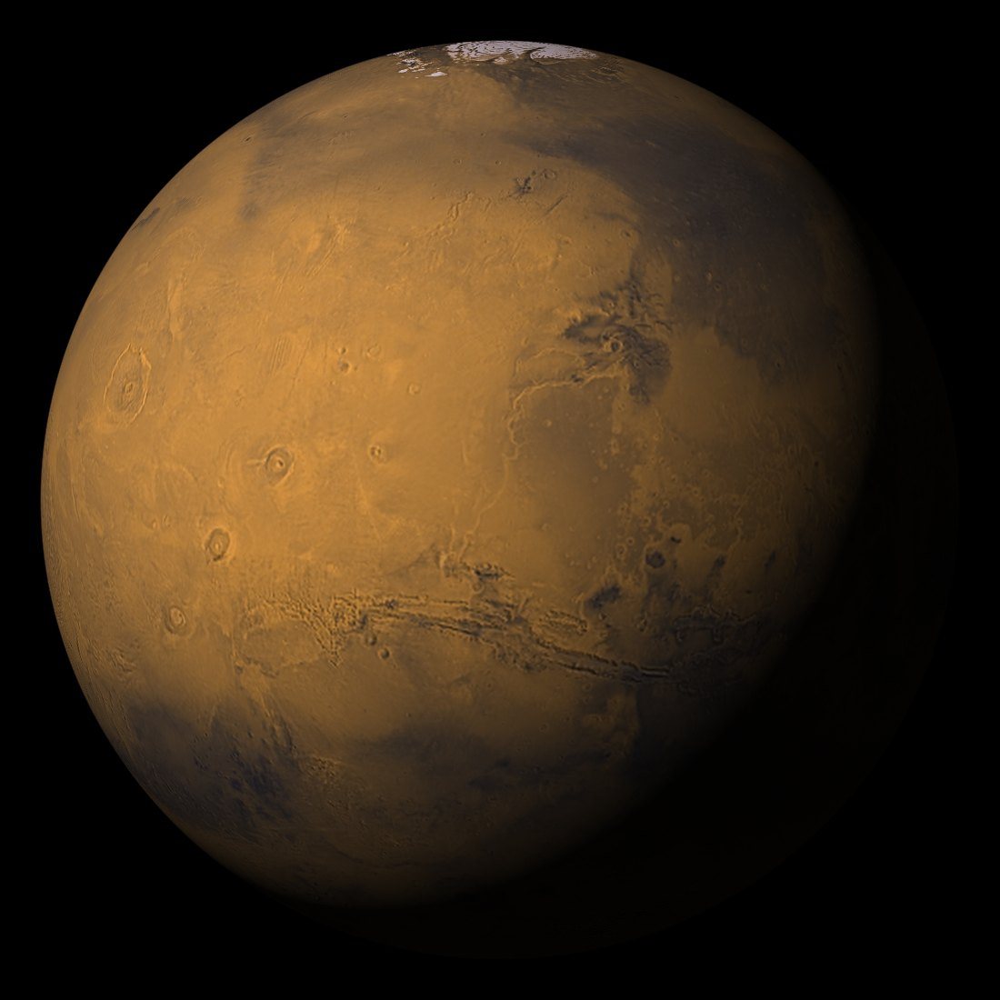
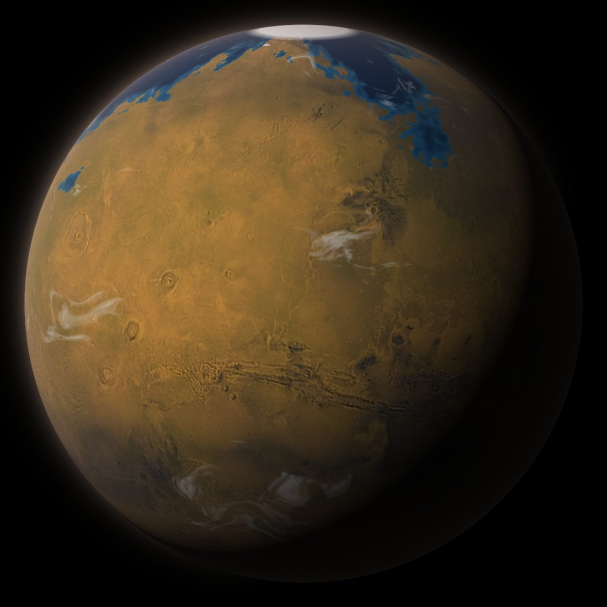
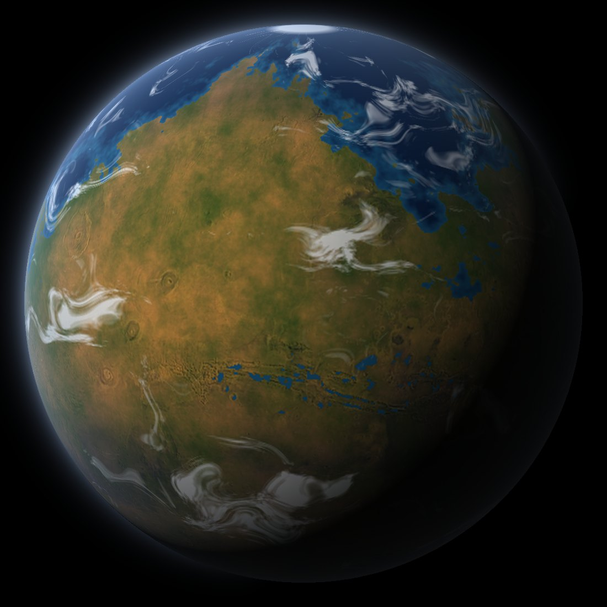
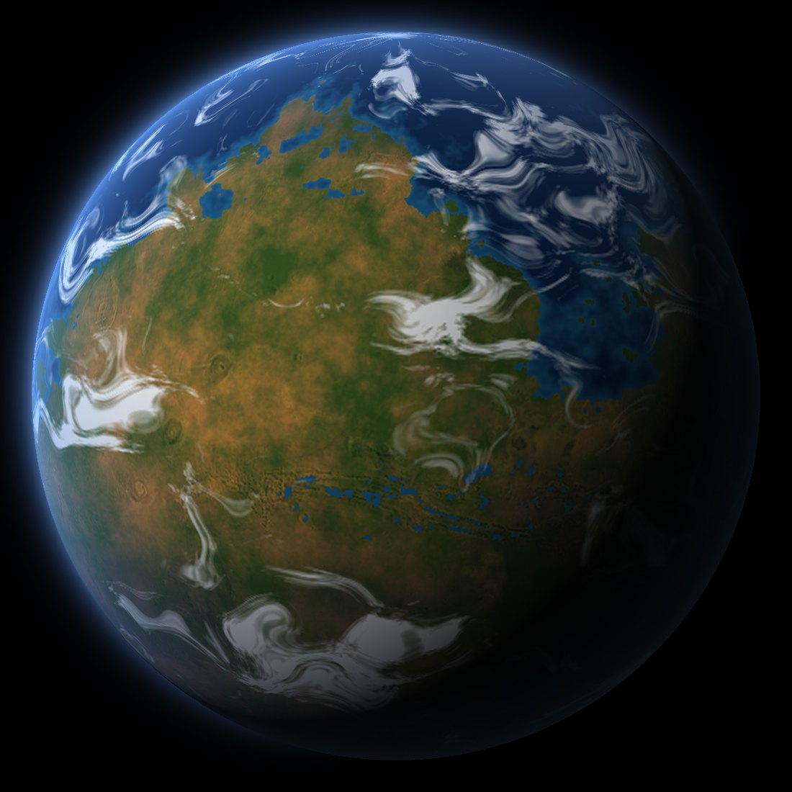
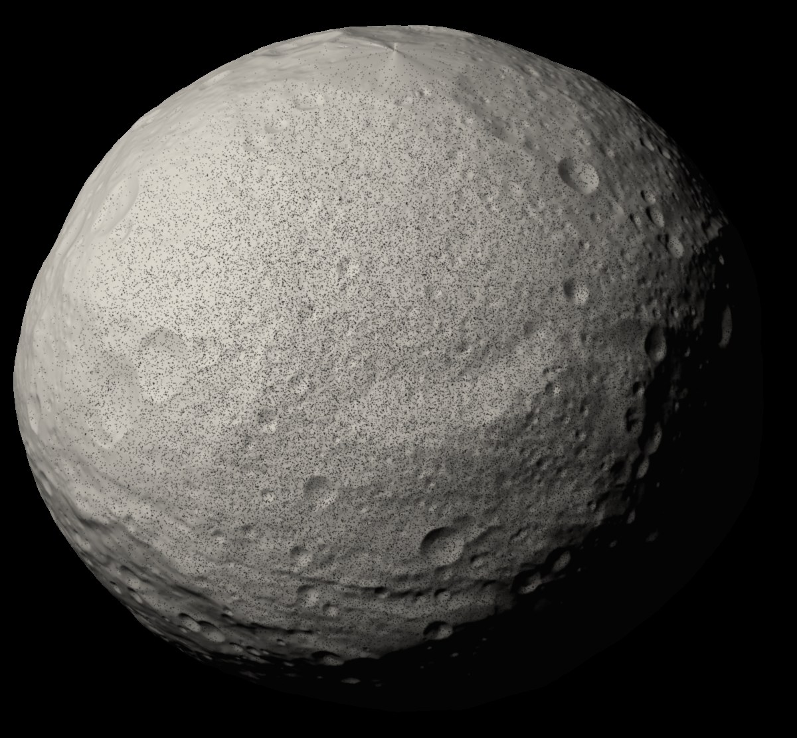
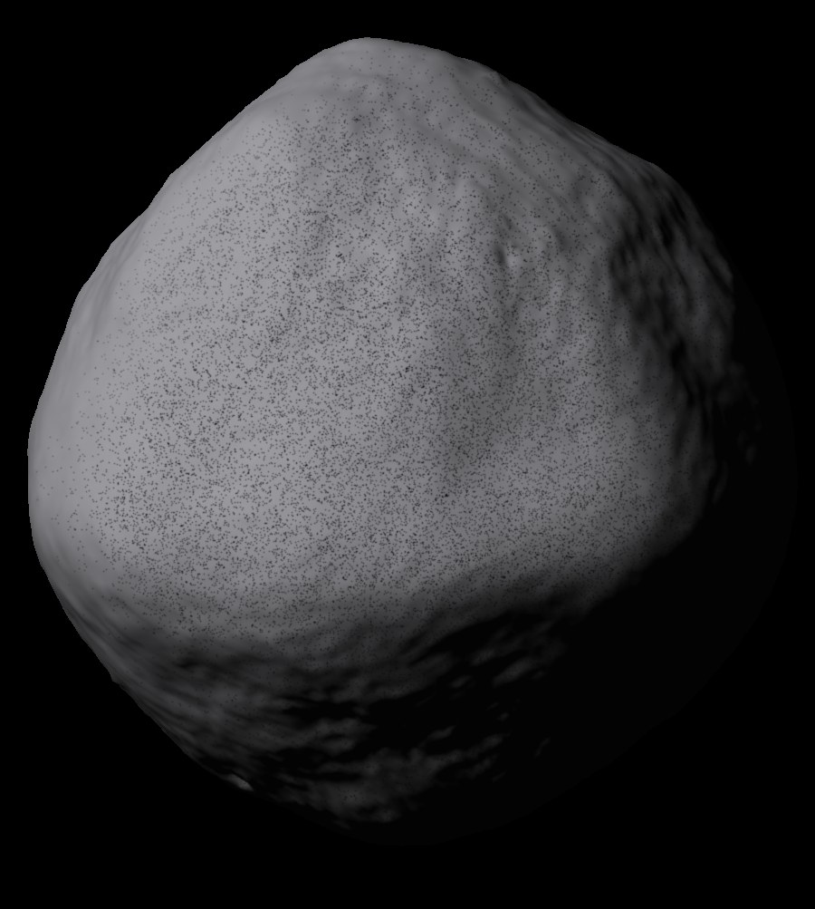

The frontier did not close.
It moved up.
Pick a place to fly there.
Not to scale.
Settle the Moon
Not flags and footprints. Humanity is going back to the lunar surface, and this time it is to stay.
The first crews will build what a base needs: power, landing pads and ice mines in the craters of the south pole. After them come the people who have no plan to leave. A town grows up around the base, and its factories ship to orbit from a world with one-sixth of Earth's gravity.



Build the space between
The space between Earth and the Moon is where the first economy off the planet gets built.
The five Lagrange points are where the pull of Earth and the pull of the Moon balance out. L1 and L2 are the crossroads. L4 and L5 are stable enough to park a city.




Terraform Mars
Mars has a day of 24.6 hours, frozen water at its poles and under its soil, and about as much land as all of Earth's continents together.
Today it is cold and almost airless. Warm it and thicken the atmosphere, and the northern lowlands flood. That is the work of centuries, and it begins with the first city.
Work the belt
The belt holds water for propellant and metal for building, and none of it has to be lifted off a planet.


For everyone back home
Most people will never leave Earth. They come out ahead anyway.
Inspiration
Ask engineers who grew up in the 1960s why they chose the work, and many will say Apollo. The next generation gets to watch towns go up on the Moon.
Science
How did the planets form? Was there ever life on Mars? Are we alone? People working on site, and telescopes built in space, can settle what probes only narrow down.
Technology
Hard problems out there become tools down here. GPS, weather forecasts and the camera sensor in your phone all came out of space work.
Economy
Orbit has near-constant sunlight and no neighbours. Put heavy industry and the biggest AI data centres there, and Earth gets the output without spending its land, power and water.
Inhabit the Solar System
And beyond!
Here the Sun's wind gives out and interstellar space begins. Voyager 1 crossed this line in 2012 and is still going.